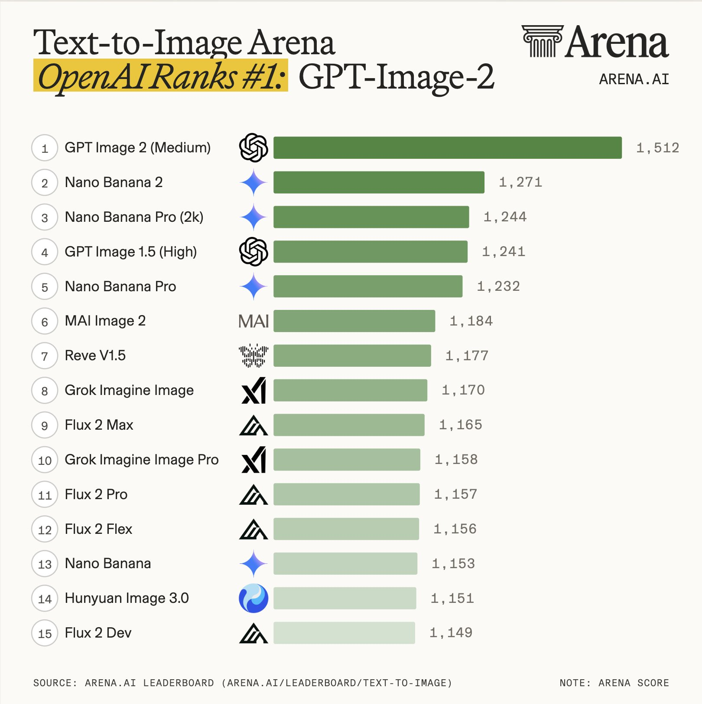
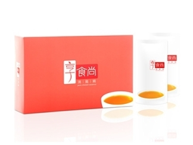

過去需要分段下指令；現在你可以直接說：「針對這本 50 頁的白皮書，寫成三篇不同語氣的社群貼文、配好標籤，並直接存入 Google Drive 協作夾」，一次完成。
能主動開啟瀏覽器查找資料、交叉比對事實、查核假新聞，最後輸出結構化的背景資料夾，而不是只給你一段文字。
能模擬人類操作電腦，在 Excel、Word、Email 和專案管理工具（如 Notion/Asana）之間移動資料，處理繁瑣的行政流程。


| 比較類別 | GPT Image 2 (精品設計師) | Nano Banana 2 (工業量產線) | Nano Banana Pro |
|---|---|---|---|
| 核心美學 與設計語言 |
專業留白、優質字體管理與佈局層次。產出的首張結果通常即為正確。 | 最鮮豔誘人、極致 HDR 效果卓越。主打 Flash 架構與效率。 | 兼顧質感與生產效率，生產級細節處理。 |
| 技術效能 | 拼字準確度：98.5% 平均延遲：~4.2s (較慢) 完美層級準確度 |
拼字準確度：91.2% 平均延遲：~0.85s 業界最快 |
拼字準確度：94.8% 平均延遲：~1.8s 效能與品質均衡 |
| 成本定價 (預估單張 1K 解析度) |
約 NTD 6.8 (USD 0.211) 適合需要絕對排版精確度的專案 |
約 NTD 2.2 (USD 0.067) 極低成本，是大規模自動化首選 |
約 NTD 4.3 (USD 0.134) 專業多功能 |
| 場景推薦 | 精品品牌設計、專業雜誌排版、全球行銷活動主視覺。 | 社群媒體自動化產線、高頻率發文、快速驗證創意。 | 生產級多功能應用、中大型專案。 |